Сумма волшебства, или опыт систематизации магической науки
Некогда в III веке до н. э. один умный парень по фамилии Евклид решил собрать все сведения о современной ему геометрии и написал по этому поводу знаменитые “Начала”. В конце XVII века Исаак Ньютон сформулировал закон всемирного тяготения и начала механики. В 1869 году Дмитрий Иванович Менделеев классифицировал химические элементы и создал Периодическую систему.
Каждый из этих ученых мужей разложил по полочкам достижения одной научной отрасли. Конечно, их труды позже были дополнены, а законы — переформулированы. Все это вы проходили в школе. Сегодня вас ждет тема, которую в школе пока не изучают. Мы будем классифицировать магию. А источником для нашего исследования послужат произведения фэнтези.
§1: Первичные понятия
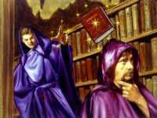
Учитель, вы что-то потеряли?
Читая любое произведение жанра фэнтези, мы встречаемся с миром, во многом похожим на наш, за вычетом присутствующих там чудес. “Реалистичность” выдуманного мира обычно сводится к тому, что в нем, как и у нас, работают законы физики, математики, химии и т.д. Причем обычно, если в мире не работают законы истории и общественного развития, это ошибка, а не “особый замысел” автора, не шибко разбирающегося в истории и социологии. Все упомянутые законы назовем Постоянными.
А вот с магией дело обстоит совсем иначе: каждый сказочный мир обладает своими магическими законами. Чтобы говорить о них, нам понадобятся новые определения.
Определение №1: Чудо есть явление, противоречащее постоянным законам. Если чудо становится научно объяснимым явлением, то оно наше исследование не интересует.
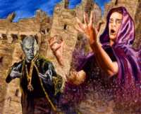
Кажется, это заклинание называется “дезинтегра....
Определение №2: Магия есть система, позволяющая вызывать явление чуда и повторять его при определенных условиях. Например, человек упал с 16 этажа без страховки, но остался жив. Типичное чудо, ибо противоречит если не механике, то хотя бы статистике. А вот магией оно станет, когда этот же человек сможет повторить подобный трюк еще раз пять. Заметьте, что при таком определении и жрец, и колдун, и экстрасенс — все становятся магами.
Определение №3: Маг есть существо, владеющее магией. В вышеприведенном примере самоубийца-неудачник станет магом только при условии, что сам будет применять магию, позволяющую ему кувыркаться с 16 этажа.
Определение №4: Источник магии есть сила, позволяющая нарушать постоянные законы. Дело в том, что любая магия за счет чего-то получает право на временное игнорирование некоторых законов. Место или субстанцию, откуда происходит это право, назовем ее источником.
Определение №5: Способ получения магии есть последовательность действий, совершаемая магом, необходимая для доступа к источнику магии. Даже в магии работает причинно-следственная связь. Ответ на вопрос “что должен сделать маг для того, чтобы произошло чудо?” — и есть способ получения магии.
Определение №6: Свойства мага есть набор качеств и умений, отличающий мага от не-мага. Далеко не во всех вселенных фэнтези магом может стать любой желающий. Порою на подобное способны единицы. Кто именно — зависит от конкретных условий.
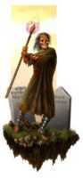
— Хозяин, ты забыл свою руку!
— Хм, а это тогда чья?
— Не знаю, но посох у нее лучше отобрать.
§2: Классификация известных магических систем
Вот мы прояснили некоторые первичные понятия. Теперь настало время разобрать их более подробно.
Источники магии
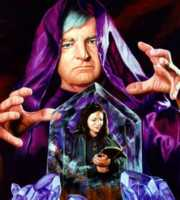
Хрустальные шары и зеркала — это прошлый век ясновидения. В них даже резкость толком не настроишь!
1)Общая магическая энергия
При использовании такого типа источников любой маг черпает энергию из общего поля, не привязанного к какому-либо объекту или явлению. Вся сложность заключаются в умении к этому полю подключиться, а затем удержать и направить энергию в нужное русло. В остальном же все маги имеют одинаковые возможности и, как правило, любой человек может стать магом после обучения.
Примеры: магический эфир, общее энергетическое поле, “Пряжа” Забытых Королевств.
2) Внутренние силы
Для достижения своих целей маг использует скрытые силы своего собственного организма. Трудность в том, что ресурсы организма не беспредельны и требуют пополнения. К тому же, чтобы черпать “из себя” большие объемы энергии, для начала надо в себе эту энергию накопить. В увеличении объема внутренней энергии и заключается самосовершенствование мага.
Примеры: псионическая энергия.
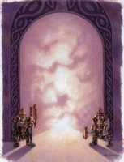
Вопрос в том, что они охраняют — вход или выход?
3) Заемные силы личной природы
Сам маг в данном случае не имеет доступа к энергии, но пользуется помощью существ, этим доступом обладающих. Причем сами существа могут и не знать об этой “магической” эксплуатации. Чтобы оперировать магией, нужно найти это особое существо и “убедить” поделится энергией.
Примеры: демоны, джинны, теплокровные (для вампиров).
4) Заемные силы безличной природы
В этом случае, как и в предыдущем, также идет поиск внешних источников, но более общего порядка. Во многом этот источник похож на первый. Главные умения — подключение к источнику и удержание энергии. Разница в том, что источник может быть доступен далеко не всем.
Примеры: планы стихий, Мир Мертвых, природные ландшафты, Источник в “Колесе времени”.
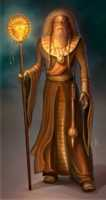
Пелор — один из старших богов Dungeons & Dragons.
5) Особые предметы
В варианте такой системы маг не имеет непосредственного доступа к энергии, а работает только с ее носителем, от мощности которого все и зависит. У носителей есть масса недостатков — они обычно ограничены по дальности и способам воздействия, быстро расходуются, иногда даже обладают собственной волей и разумом.
Примеры: магические посохи, волшебные кольца.
6) Особые локации
Есть миры, в которых особой силой обладают только специально оговоренные места. Умение добывать и использовать эту силу и есть ключевое умение мага в таком мире. Безусловно, поиск подходящей локации — также не последний навык в арсенале мага.
Примеры: священные рощи друидов, могилы древних героев, поля магических битв, аномальные зоны.
7) Вера
Иногда именно вера позволяет отступать от постоянных законов. Причем как вера в себя самого, так и вера других людей в вас. Маги используют и то, и другое. Искусство убедить других людей поверить в вас или в реальность воображаемых событий будет ключевым для мага этой системы.
Примеры: оживление фантазий и кошмаров, природа божественных сил в Забытых Королевствах.
Способы поллучения магии
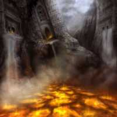
Эксперименты с магмой следует ставить, находясь на расстоянии не менее... Нет, все же их вообще не следует ставить!
1) Ритуальный
При этом способе маг просто выполняет последовательность некоторых действий, не задумываясь о причинах и не представляя, что происходит на уровне физики. Все, что он видит — это конечный результат. Тут четкость действий и сложность ритуала являются определяющими.
Пример: обрядовые танцы, церковные ритуалы, на полях: Стив Перри, Роберт Говард “Конан и Четыре стихии”.
2) Научный
В основу способа положена теория магии. Эффективность зависит от глубины знаний и свободы мышления мага. Сама теория магии может быть глубоко антинаучной, даже с точки зрения формальной логики. Научный способ — это только название, но не содержание!
Пример: магия в Кринне (“Сага о Копье”), на полях: Спрэг де Камп “Дипломированный чародей”.
3) Инстинктивный
Такое использование магии подразумевает более тесный контакт с энергией. Сам маг может не иметь представления о теории или ритуалах, но при этом работает непосредственно с магическим материалом на уровне инстинктов, формируя и направляя его так, как ему нужно.
Пример: “Колесо времени”, “Хроники Амбера”, на полях: “Одержимый магией”.
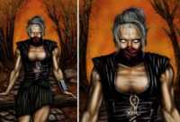 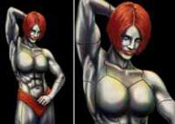
Урсула Ле Гуин. “Правило имен”
Тут мистер Андерхилл начал медленно заливаться краской, как это всегда бывало, когда кто-то из жителей деревни принимался грубить ему. Однако дальше произошло что-то необычное. Он вдруг весь пожелтел, волосы его встали дыбом, и в следующий миг страшный лев издал оглушительный рев и бросился, оскалив белые клыки, вниз по склону холма на Чернобородого.
Но Чернобородого там уже не было. Гигантский тигр цвета ночного неба, исчерченного грозовыми молниями, прыгнул навстречу льву...
Лев исчез. Возле пещеры вдруг выросла роща высоких деревьев, черных в слабом свете зимнего солнца. Тигр замер в воздухе на самой границе отбрасываемой ими тени и превратился в огненный смерч, который хлестал языками пламени сухие черные ветки...
Но там, где только что высились деревья, склон холма неожиданно вспучился, и потоки отливающей серебром воды устремились вниз, угрожая залить пламя. Но огня уже не было...
В одно мгновение перед широко раскрытыми глазами рыбака предстали два холма — зеленый, знакомый ему с детства, и новый, невесть откуда взявшийся, голый коричневый холм, готовый поглотить падающую воду. Все это произошло быстрее, чем он успел моргнуть, но то, что он видел теперь, открыв глаза, заставило его застонать и зажмуриться еще крепче. Там, где только что струился водопад, уже парил дракон. Черные крылья заслоняли весь холм от солнечного света, открытая пасть извергала огонь и дым.
Под этим ужасным чудовищем стоял, презрительно ухмыляясь, Чернобородый.
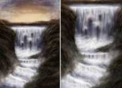
Свойства мага
1) Врожденный дар
Этот случай является антитезой к утверждению “магами не рождаются”. Либо этот дар есть, либо его нет. И ничего с этим не поделаешь. Безусловно, само наличие дара еще не означает умение его использовать. Но вот если его нет, то, увы, даже самые глубокие познания в теории ничего не принесут.
Пример: бессмертные из “Горца”, драконы, Роджер Желязны “Подмененный”, “Одержимый магией”.
2) Обучение
Самый распространенный вариант. Магом может стать каждый, но лишь пройдя специальную подготовку и получив нужные знания. Несмотря на очевидную доступность этого свойства, процесс обучения обычно сложен.
Пример: магия в Кринне (“Сага о Копье”).
3) Особые заслуги и исключительные обстоятельства
Есть миры, где магия становится доступна только самым выдающимся индивидам либо даруется случайно (например, после удара молнии в голову). Причем распределяют ее высшие силы или воля слепой фортуны.
Пример: назгулы, лорды доменов Равенлофта.
Сфера применения
1) Воздействие на окружающую среду
Двигать предметы усилием воли, швыряться вредоносными разрушительными заклинаниями, обращать одни объекты в другие — вот неполный список подобных воздействий. Чем круче маг, тем серьезнее причиняемые “воздействия”. Особо циничные маги даже отстраивают себе волшебные замки подобным образом. На мой взгляд, весьма грубый и неэстетичный способ проявления силы. Нет бы рабов или наемных рабочих использовать!
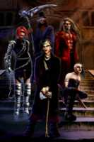
Примеры: телекинез, боевые заклинания (скандируя: “Fireball, fireball, fireball!”).
2) Воздействие на сознание
Весьма элегантный способ устранения конкурентов. Пусть сами разбираются с тем, что у них теперь творится в голове.
Примеры: иллюзии, внушение, самовнушение.
3) Воздействие на организм
Использование скрытых сил организма. Не так мощно и впечатляюще, как работа с окружающей средой, зато вполне самодостаточно. Кроме своего тела и источника энергии, ничего не требуется. А когда они еще являются одной и той же субстанцией — вообще замечательно.
Примеры: оборотни, самоизлечение, левитация.
4) Перемещение в пространстве и времени
Мечта нашего детства: раз — и уже в школе, дома, на море — нужное подчеркнуть. А еще лучше — слетать во вчера, исправить ошибку в контрольной... Обращаю особое внимание на предвиденье и пророчества. Если предсказатель получил оные знания путем перемещения части сознания в будущее, то это — та самая сфера магии. А если же он метеоролог, то — никакой магией здесь и не пахнет.
Примеры: телепортация, создание предметов из пустоты, призыв экстрапланарных существ, путешествия во времени.
Роджер Желязны. “Одержимый магией”
Он почувствовал дрожь в драконовом пятне, воздух был заполнен нитями заклинаний. Он вытянул руку и схватил пучок нитей, зажав их в кулак. Намотав на руку, он щелкнул ими, словно кнутом, прямо перед лицом противника.
Как только хлыст из нитей приблизился, незнакомец перехватил его. Выхватив кнут, он направил ответный удар в сторону Поля. Плотность нитей заклинаний между ними стала такой непролазно густой, какой Полю еще не доводилось видеть. Густота нитей почти полностью скрыла противника.
Поль вращал левой рукой, стараясь свернуть нити в клубок. Внезапно он поверг их в пламя и швырнул горящий клубок в противника. Вывернув правую ладонь тыльной стороной, мужчина отклонил горящий пучок. Затем поднял руки и затряс кистями.
Свет в комнате запульсировал. Воздух кишел нитями заклинаний. Словно разбуженные змеи, они извивались и искрились разными цветами. Они становились все толще, и вот зловещая пелена полностью скрыла противника.
Пульсация драконова родимого пятна слилась в единый ток, охватила всю правую руку и вызвала онемение. Поль направил на пятно всю энергию, концентрируя волю на поиске ясного отчетливого образа противника. Тотчас же силуэт противника вспыхнул разноцветными огнями и засверкал, словно радуга во время дождя. Комната исчезла. Поль заметил, что его тело тоже люминесцирует.
Два человека оказались лицом к лицу, разделенные маленьким мирком, заполненным движением и переливами света.
§3: Классификация избранных магических миров
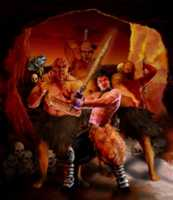
Одна из проблем писателей фэнтези в том, что упорно не хотят раскрывать секреты своих магических систем. Или же — сами их не знают. Вот и получается, что магия в мире есть, а почему и как она работает — остается только гадать. Будем определять по вторичным признакам. Кроме того, в большинстве известных миров сосуществуют сразу несколько магических систем. Одни появляются там как дань традиции, другие заимствуются, а третьи представляются автору неким новаторством, что далеко не всегда так. Перефразируя классика жанра, чтобы создать новую магию — недостаточно перекрасить fireball в зеленый цвет.
Конечно, удобнее всего классифицировать миры, по которым существуют игровые руководства. А еще лучше, если сначала создавалась магическая система, а потом “под нее” уже делали мир. В этом случае авторы заранее задаются вопросом, что же такое магия и как она достается персонажам. Но мы не будем ограничиваться только такими мирами, поскольку наиболее талантливые писатели-фантасты детально рассказывают о магии своих фэнтези-вселенных.
Попытаемся применить нашу классификацию магических систем на практике и рассмотрим магию отдельных фэнтези-миров, тех, которые проработаны наиболее глубоко.
Забытые королевства (Forgotten Realms)
В мире Фэйруна магия развивалась и перерабатывалась вместе с системой ролевых правил. Вначале это было AD&D, а теперь — D&D 3.5 edition (d20 system). Основой и источником магии Королевств служит “Пряжа” (weave), всепроникающая субстанция, которой заведует Мистра, местная богиня магии. Мистра поддерживает “Пряжу” в порядке и оберегает от глупых людишек, пытающихся поглубже запустить в нее пальцы. Кроме “Пряжи” существует также и ее оппозитное воплощение — “Теневая пряжа”, созданная богиней тьмы по имени Шар. Любой маг, а священники в этом мире фактически причисляются к магам, использует “Пряжу” для своих заклинаний (немногие вместо этого применяют “Теневую пряжу”). Доступ к магии имеет любое существо, но некоторых природа наделяет особыми способностями. Полная классификация магии Фэйруна выглядит так.
Источники магии — общая магическая энергия (“Пряжа” обоих видов). Можно также использовать магические предметы и заимствовать силы от демонов, но все это — опосредованное использование той же “Пряжи”.
Способы получения магии — ритуальный или научный. У священников — первый вариант, у университетских магов — второй.
Свойства мага — обучение, врожденный дар, особые заслуги/обстоятельства. Обучают здесь много и по-разному, так что выбор школ и направлений богатый. Некоторым везет с особым природным даром, а есть еще и целые расы магических существ — эльфы, драконы и проч. За особые заслуги здесь отмечают боги. Не скажу, что многих, но прецеденты известны.
Сфера применения — все четыре. При таком разнообразии систем подготовки это и не удивительно.
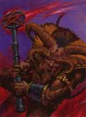 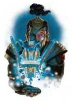
Равенлофт (Ravenloft)
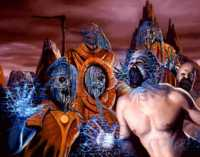
Мир, во многом похожий на Фэйрун, ибо существует и развивается в той же игровой системе. За одним вычетом — просто так в него никто не попадает. Заведующие всем Темные Силы Равенлофта выбирают, кому в него попадать, как и что в нем делать.
Источники магии — общая магическая энергия. Ее олицетворяют Темные Силы Равенлофта. Насколько мне известно, особой разборчивостью они не отличаются, и даже священники светлых богов могут рассчитывать на поддержку своих заклинаний.
Способы получения магии — ритуальный и научный. Здесь магия подчиняется тем же законам, что и в Фэйруне, только неясно, является ли это природным свойством мира или же желанием Темных Сил.
Свойства мага — особые заслуги/обстоятельства, обучение, врожденный дар. Если последние два свойства такие же, как и в предыдущем мире, то особые заслуги тут имеют совсем другой статус. Любое существо, идущее по пути Мрака, получает от Сил новые способности и возможности, взамен лишаясь остатков человечности. Пройдя этот путь до конца, редко кто бывал рад результату.
Сфера применения — все четыре.
Амбер (Amber)
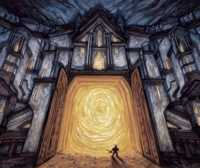
Мир известен всем любителям жанра по “Хроникам Амбера”, написанным Роджером Желязны. В нем дети Оберона и Единорога перемещаются между мирами, как мы — между станциями метрополитена. А иногда — и того быстрее. Все миры являются отражениями друг друга и нанизаны, как бусины на нитку, на одну Дорогу, на крайних точках которой находятся Амбер и Хаос. Прошедшие инициацию могут по этой Дороге перемещаться.
Источники магии — особые предметы, особые локации. Под “локациями” я подразумеваю Лабиринт и Логрус, а под предметами — карты и прочие артефакты. Хотя с этой точки зрения и Лабиринт с Логрусом — предметы.
Способ получения магии — инстинктивный. Никаких ритуалов, никакой системы — только воля мага и доступные ему силы.
Свойство мага — особые заслуги/обстоятельства. Под ними подразумевается прохождение Лабиринта или Логруса. После этого маг обретает силу.
Сфера применения — перемещения в пространстве. А если точнее — то между пространствами.
Земноморье (Earthsea)
Мир Урсулы Ле Гуин знаком нам по приключениям Геда Сокола, Повелителя Драконов. В этом мире магом становится тот, кто знает истинные имена вещей и существ. А даже у драконов и самых могущественных магов есть истинное имя!
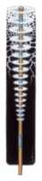 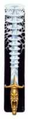
Источники магии — заемные силы личной природы. Знание истинного имени дает власть как над предметом, так и над существом.
Способ получения магии — научный. Только изучая имена и продумывая правильные комбинации, можно получить желаемый результат.
Свойства мага — обучение. Зубрежка имен и практика определения истинного имени — основные дисциплины.
Сфера применения — воздействие на окружающую среду. Любой предмет или существо, обладающие именем, подвержены воздействию магии.
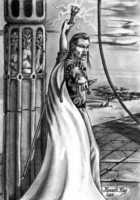 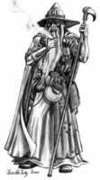
Анджей Сапковский. “Владычица озера”
Ослепительная молния пробила пол, в воздухе засвистели осколки терракоты и острые кусочки мозаики. Вторая молния попала в колонну, за которой укрылся ведьмак. Колонна развалилась на три части. От свода отвалилась половина арки и с оглушительным грохотом рухнула на пол. Геральт, прижавшись животом к полу, прикрыл голову руками, понимая, сколь эфемерна такая защита от падающих на него пудов. Он приготовился к худшему, но было вовсе не так плохо. Он вскочил, успел увидеть над собой блеск магического щита и понял, что спасла его магия Йеннифэр.
Вильгефорц повернулся к чародейке, разбил в пыль колонну, за которой она укрылась. Яростно крикнул, прошил тучу дыма и пыли огненными нитями. Йеннифэр успела отскочить, ответила, пустив в чародея собственную молнию, которую, однако, Вильгефорц без всяких усилий и почти играючи отразил. Ответил ударом, швырнувшим Йеннифэр на пол.
Геральт бросился на чародея, смахивая с лица штукатурку. Вильгефорц уставился на него и протянул руку, из которой с шипением вырвалось пламя. Ведьмак машинально заслонился мечом. О диво! Покрытый рунами краснолюдский клинок защитил его, разрубив огненную полосу пополам.
— Хо! Прекрасно, ведьмак! А что скажешь на это?
Ведьмак ничего не сказал, а отлетел так, словно по нему ударили тараном, упал на пол и проехался, остановившись только у цоколя колонны. Колонна раскололась и развалилась на мелкие кусочки, опять прихватив с собой часть купола. На этот раз Йеннифэр не сумела прикрыть его магическим щитом. Огромный кусок, отвалившийся от арки, попал ему в бок, свалил с ног. Боль на мгновение парализовала его.
Йеннифэр, скандируя заклинания, швыряла в Вильгефорца молнию за молнией. Ни одна не достигла цели, все бессильно отражались от защищающей чародея магической сферы. Вильгефорц неожиданно вытянул руки, быстро развел их в стороны. Йеннифэр вскрикнула от боли, поднялась в воздух. Вильгефорц свел руки так, словно выжимал мокрую тряпку. Чародейка пронзительно завыла. И начала скручиваться...
§4: Магия и жизнь
Теперь обратимся к магии в нашей с вами реальности. Существуют системы, которые для человека непосвященного кажутся прямо-таки магическими. На самом деле ничего сверхъестественного в них может и не быть, а все “чудесные” результаты вполне объяснимы современной наукой. Интерес они представляют только в плане помещения этих явлений в нашу классификацию магических систем. Сразу хочу заметить, что речь пойдет лишь о форме, а не о содержании. А вот являются ли они магией настоящей или только формально подпадают под это определение — это совсем иной вопрос!
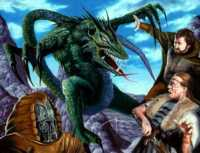
Психоанализ
Источник магии — внутренние силы. Причем всегда это силы самого пациента, направленные в нужное магу русло.
Способ получения — научный. Это можно утверждать, так как существуют специальные курсы подготовки.
Свойства мага — обучение, природный дар. Тут требуются некоторые врожденные способности, которые развиваются путем обучения.
Сфера применения — воздействие на сознание.
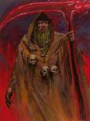
Йога
Источник магии — внутренние силы, общая магическая энергия.
Способ получения — ритуальный, научный. Занятия йогой — это и философия, и соответствующие физические упражнения. Принимая философию за “научную основу”, а упражнения — за ритуалы, мы приведем йогу к вышеописанной классификации.
Свойства мага — обучение.
Сфера применения — воздействие на организм.
Роберт Говард, Стив Перри. “Конан и Четыре стихии”
Он бормотал арканское заклинание, составленное из мрачных формул Зла. Тело волшебника сотрясалось под натиском сил, пронизывающих его. Хриплым, низким голосом он произносил:
— Выйди, выйди, дитя Серых Стран! Выйди, о выйди, порожденье ада! Выйди, выйди, ибо я тебе повелеваю!
Затем он добавил Семь Слов Пергамента. Ему стоило огромных трудов выговорить каждое из Семи Слов. Любая небрежность могла означать немедленную смерть: одно неправильно произнесенное слово — и демон может вырваться из связавшей его пентаграммы, которая была начертана на каменных плитах.
Из недр горы поднялся страшный крик, словно кто-то погружал в расплавленный свинец некое существо, не принадлежащее к этому миру.
В центре пентаграммы заклубился дым. Истекая из одной точки пространства, он расползался отвратительно смердящими темно-красными облаками, смешанными с ярко-желтым туманом, и в воздухе покоя словно открылись зияющие раны. Адские вспышки света слепили глаза; затем послышался запах серы. Неожиданно внутри геометрической фигуры оказался демон. Черная слизь струилась по его телу; каждая его пора источала смрад. В высоту он был полтора человеческих роста. Кожа его была цвета свежей крови. Обнаженный и безволосый, стоял он в магическом узоре на полу. Только слепой не увидел бы его жуткой мужественности.
— Кто осмелился? — проскрежетал демон. Он подскочил к Совартусу, чтобы схватить за горло этого человека с угольно-черными волосами и клиновидной бородкой, который улыбался ему. Силовая стена, замыкающая пентаграмму, оттолкнула демона. Гигантские мышцы вздулись на руках чудовища, когда он ударил по невидимой преграде кулаками. Он закричал. В этом крике звучала вся ярость преисподней. Демон обнажил длинные белые клыки...
Заключительное слово
Итак, вами только что был прочитан краткий курс, посвященный структуре магии. Как и труды Евклида, Ньютона и Менделеева (с которых мы начали статью), этот курс может быть дополнен и даже пересмотрен — в будущих статьях “Мира фантастики”.
Сфера применения нашего курса — создание новых магических систем и классификация хорошо забытых старых. На основе нашего исследования вы можете сами классифицировать системы магии в других произведениях. Например, использование Силы (the Force) в “Звездных войнах” или волшебства в “Гарри Поттере”. Но помните, что магия — это искусство. А искусство нельзя загонять в рамки. И еще магия — это обман (о чем читайте далее в номере в материале Михаила Попова). Так что не верьте тому, кто скажет вам, что разбирается в настоящей магии. Будучи магом, я могу это утверждать!